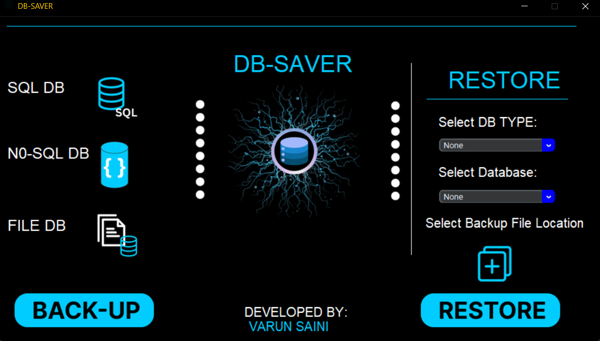

DB-Saver
DB-Saver
DB-Saver
DB-Saver
DB-Saver backs up and restores MySQL, PostgreSQL, SQLite, and MongoDB databases in one click — compressed, verified, and stored exactly where you tell it to.
DB-Saver is a Python-based application built to remove the friction from database
backups. Instead of memorizing mysqldump flags or writing
one-off scripts per project, DB-Saver gives you a single, reliable interface for
every engine you work with.
It supports MySQL, SQLite, PostgreSQL, and MongoDB — covering both SQL and NoSQL workflows — with the same backup and restore experience across all of them.
SQL and NoSQL, handled the same reliable way.
Full dump and restore with structure, data, and indexes preserved.
Native pg_dump-based backups with consistent restore behavior.
Lightweight file-based backup — ideal for local and embedded apps.
Document-store backups using mongodump/mongorestore under the hood.
Works seamlessly with SQL (MySQL, PostgreSQL, SQLite) and NoSQL (MongoDB) — one consistent interface for every engine.
Create backups with one click and restore them instantly when needed — no manual command construction.
Built entirely with Python, ensuring reliability, predictable behavior, and cross-platform compatibility.
Backups can be stored locally or uploaded to remote servers — your choice, your control.

Happy to walk through the backup engine architecture, restore logic, or the multi-driver design.
Get in Touch